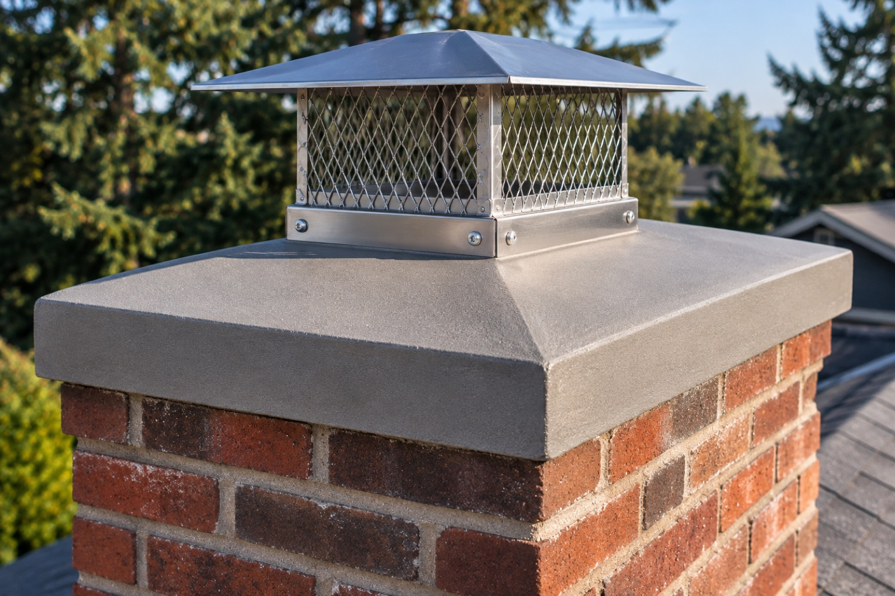

Chimney & home maintenance in Renton, WA
Renton chimneys, gutters, and roofs, taken care of.
Chimney services and home maintenance for Renton houses, townhomes, and condos, from the Highlands to Kennydale.
- License
- WA [License #]
- Insurance
- [Insurance details]
- Hours
- [Business hours]
- Service area
- Seattle & the Eastside
Chimneys swept and inspected, so every fire burns the way it should.
Gutters and roofs kept clear, so rain goes where it belongs.
Floors covered, work areas contained, and nothing left behind.
Photos of what we find, and a written price before any repair.
Renton homes
Keeping older homes safe and dry.
Renton has many mid-century homes, especially in the Highlands and Kennydale, and most were built with a brick chimney. After decades of weather, crowns crack, mortar wears away, and flashing lets go, which is how water gets in.
A yearly sweep and inspection, with gutters and roof kept clear, is the simplest way to protect an older home from the damage rain does over time.
- Renton Highlands
- Kennydale
- Benson Hill
- Fairwood
- Talbot Hill
- The Landing
Services in Renton
What we do in Renton.
Chimney and fireplace work, and the exterior upkeep that keeps a Northwest home dry.
How it works
A simple visit. No surprises.
Four of the six steps happen before any work begins, so you always know what's being done and why.
- 01
Book a visit
Tell us what you need and where you are. We confirm a day and an arrival window.
- 02
We arrive & protect
Floors and furniture near the fireplace are covered, and outdoor work areas are set up safely.
- 03
We look first
Before any tools come out, we check the chimney, gutters, roof, or vent and take photos.
- 04
Clear price
You see what we found. If anything beyond the booked service is needed, you get the price first.
- Work ▼
- 05
The work
The job you approved, done carefully and by the book.
- 06
Cleanup & report
We clean up, haul away debris, and walk you through what was done, with photos.
FAQ
Renton questions.
Anything else, ask us when you book.
01Do you work in Renton?
Yes. Julius Services serves homes throughout Renton, including Renton Highlands, Kennydale, Benson Hill, and nearby areas.
02How often should my chimney be swept and inspected?
At least once a year for inspection, according to the national standard (NFPA 211), with sweeping whenever there is soot or creosote buildup. If you burn wood regularly, plan on a yearly sweep.
03Can you do several services in one visit?
Often, yes. A chimney sweep, gutter cleaning, and dryer vent cleaning fit well together. Tell us everything you'd like done when you book.
04How do I book?
Use the booking form or call us. We'll confirm a day and an arrival window.
Nearby
Also serving nearby.
Need a hand in Renton? Let's talk.
Tell us what your home needs. We'll confirm a time and take it from there.